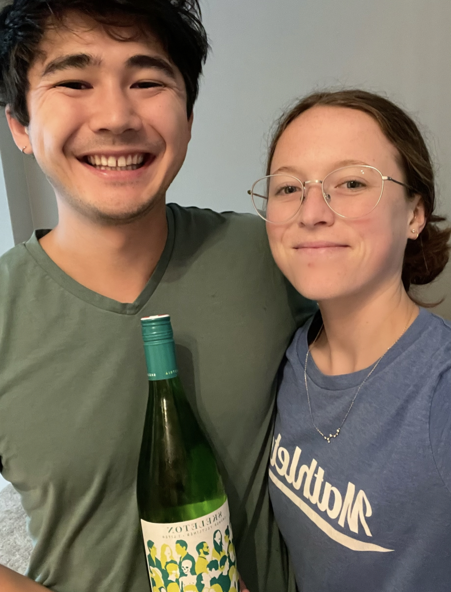

Grüner Veltliner
What is it?
Primary flavors of Grüner Veltliner are starfruit, yellow apple, pear, gooseberry, asparagus, green bean, white pepper, crushed gravel, and flint [1]. Note that the main sources we use for WOTW disagreed about the top 5 flavors, so we used all unique flavors given by both sources. We had this wine with a pasta primavera.
Molly's Rating and Tasting Notes
8.0. On the nose, I mostly get apple and maybe wet gravel or clay. The taste has a lot of apple and maybe notes of pear. I don't think I know what star fruit tastes like, so maybe that's what I'm getting. There is a minerally note going on in the finish of the wine. I like this wine, enough that I might order it if I saw it on a menu somewhere. I'd recommend Gruner Veltliner to people who like white wines that air on the somewhat sweeter side.
Ryan's Rating and Tasting Notes
8.3. On the nose I get apple, pear, and something vegetal, possibly aspargus. I also get traces of egg yolk, pasta water, and Play-Doh. Upon tasting I am met with a rather juicy, yet not intensely flavorful wine. It's a little sweet, with a touch of acidity, and a dash of bitterness. It has a decent body, and coats the mouth. Some of the tasting notes I get are pear, yellow apple, green apple, and crushed up gravel. I also get an indescript sweetness similar to dragonfruit, and a little bit of sweet, warm spice as well. The finish is decently long, and quite pleasant if I must say. Although some of the more astringent flavors are present towards the end, the finish is actually quite nice and intriguing. Overall, a good wine that paired well with our salmon pasta. I would definitely have this one again, and would look for it at restaurants.
References
[1] Madeline Puckette and Justin Hammack. Wine Folly: The Master Guide. Avery - A Penguin Imprint, New York, NY, 2018.
[2] "Grüner Veltliner." Wine Folly. https://winefolly.com/grapes/gruner-veltliner/. Accessed: August 2023.
Wines we haven't finished
- None this week!